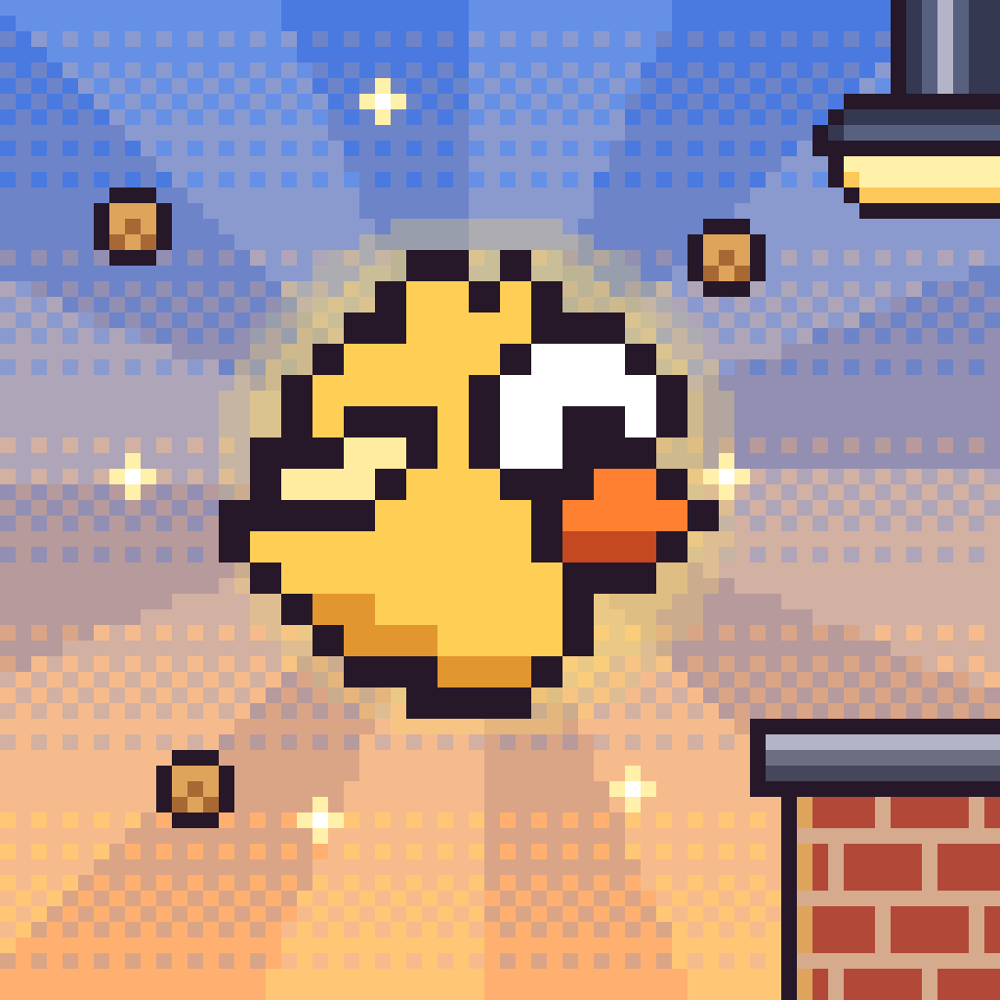

Brainrot arcade flyer for iPhone by Holsoft.
Found a bug, lost a purchase or have an idea? Write to holman.it.cz@gmail.com. Please include your iPhone model and iOS version.
My purchase is missing. Open Settings in the game and tap Restore purchases, signed in with the same Apple ID you bought with.
How do I change my ad consent? Settings → Privacy options in the game (shown in the EU, UK and Switzerland).
Can I buy card packs? No. Card packs are earned in-game only, never sold for real money.
Is my progress backed up? Progress is stored only on your device. Deleting the game deletes it.
Chyba, ztracený nákup nebo nápad? Napište na holman.it.cz@gmail.com. Ztracený nákup obnovíte ve hře v Nastavení → Obnovit nákupy.